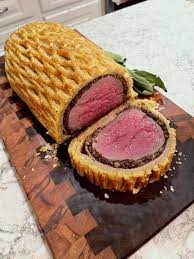

Recipe for Beef Wellington

This is how a Beef Wellington should look if you follow this recipe correctly
The recipe is quite simple, but has many steps. It is infamous for being a daunting recipe to start with, but trust me when I say YOU CAN DO IT!
Ingredients
- Filet of beef
- Disjon Mustard
- Champingon mushroms
- Parsley
- Butter
- Dough
Steps
- Start by searing the meat, it should be appropriately seared on all sides. When done set it aside to rest while you prepare the filling
- In a large blender, put all the mushroms, as well as parsely and saly and pepper, blend thoroughly
- When done blending, you should attempt to get as much moisture out of the filling as possible, use a cloth, and heat in the pan for a couple of minutes until dry